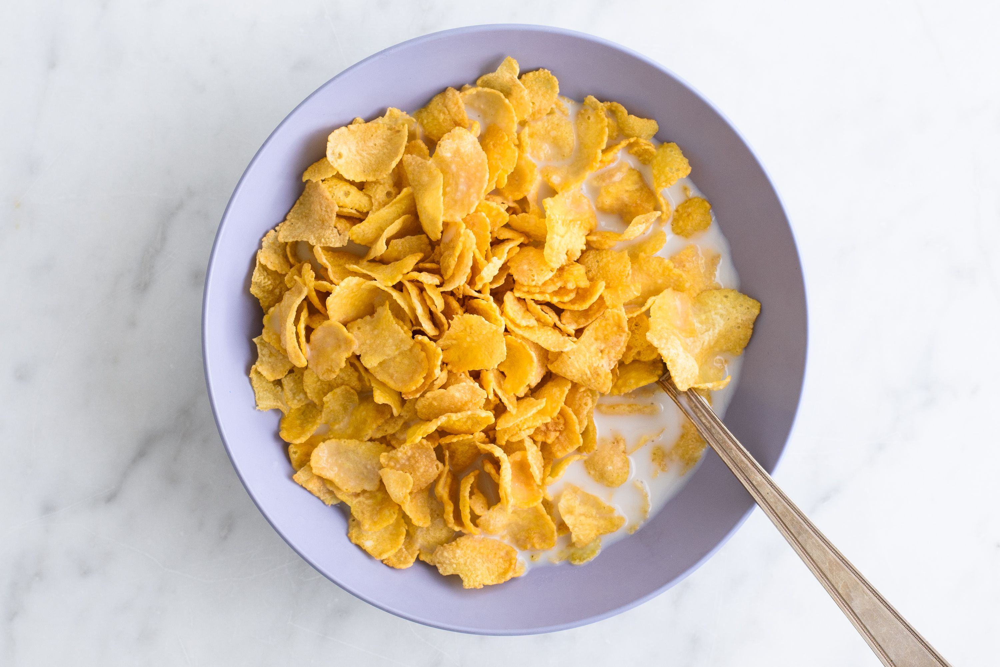

Cereal sandwich

This is a recipe for a bowl of cereal. I think it's clear that I've lost a lot of steam on these.
One of my breakfasts. Hope you enjoy it.
Ingredients
- Milk
- Corn flakes (or whatever)
Steps
- Pour cereal from box into bowl. Very important that this comes first.
- Next, pour the milk into your cereal until all but the top layer of cereal have been coated.